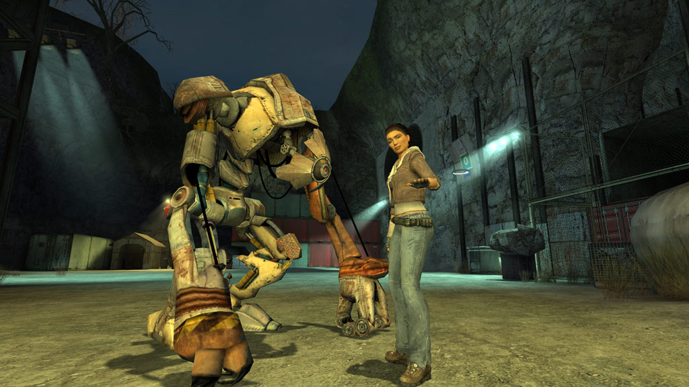
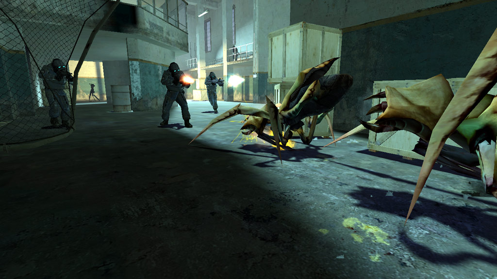
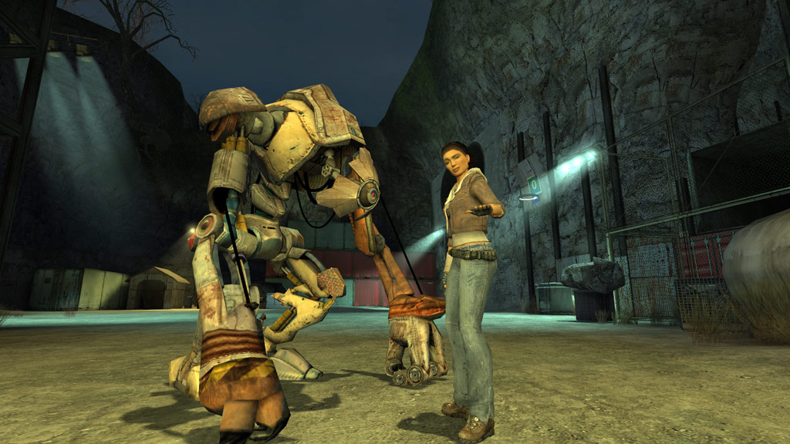
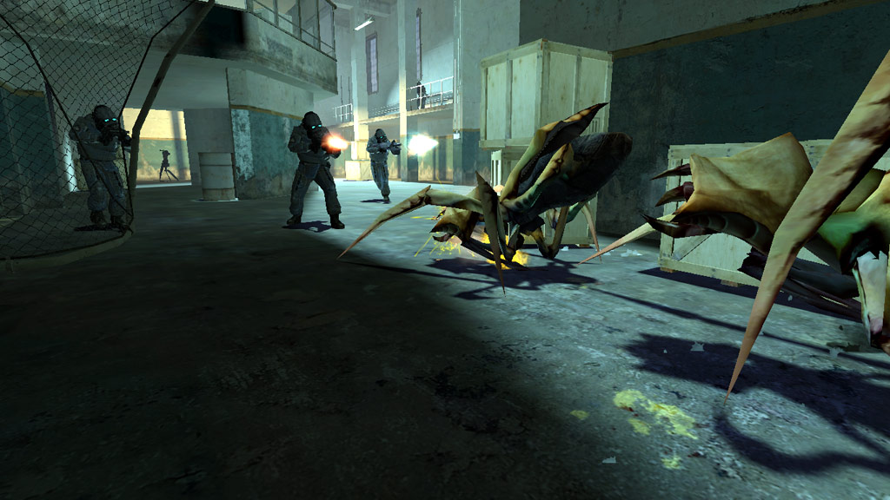
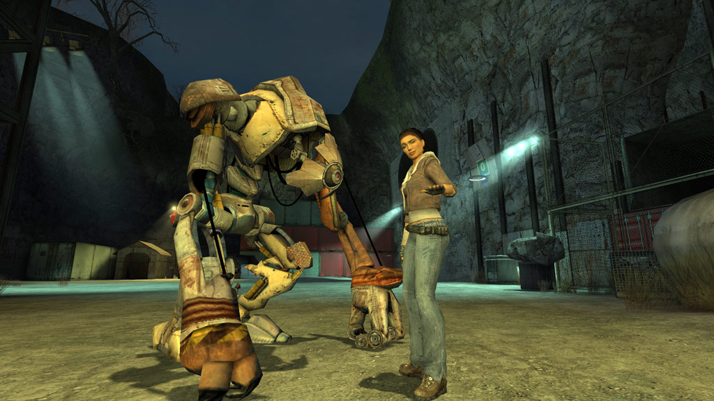
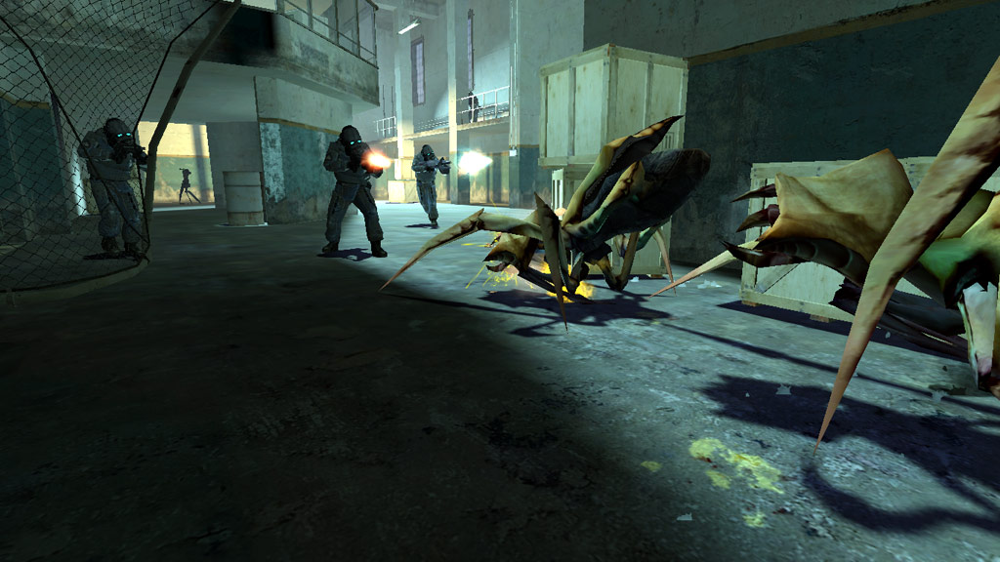

Gallery
 



Half Life 2 (2004) is the second installment in the critically acclaimed Half Life series, and the long awaited sequel to the pioneer that was Half Life. At the time of its release, Half Life 2 was at the forefront of the FPS genre, and today is hailed as a masterpiece and as one of the giants behind modern FPSs.
Review
As its predecessor, Half Life 2 is recognised by most game consumers as a classic shooter, similar to the likes of DOOM or QUAKE. Its release redefined the market, and melded it into something more recognisable to the modern audience.
Half life 2's pacing, weapon diversity, and action is phenomenal. Its rich and atmospheric vistas of a dystopia are awe inspiring, compared to the other games in its genre at the time of its release.
The game features, once again, the player in the shoes of Doctor Gordon Freeman, battling his way through the dystopian scapes of City 17, a city in north east europe that was taken control of by an extradimensional empire, seeking to destroy humanity and incorporate it into its neverending conquest of the multiverse.
Half Life 2's legacy spawned many later titles in the Half Life series, and a new era of first person shooters. Without it, the entire genre would be much different than it is now, and probably, quite inferior.
Characters
Half Life 2 features a plethora of memorable and charming characters who guide Dr. Freeman through its complex and intriguing story. These characters include:
Gallery


Videos
{kind=link}